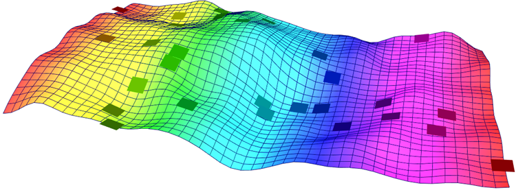
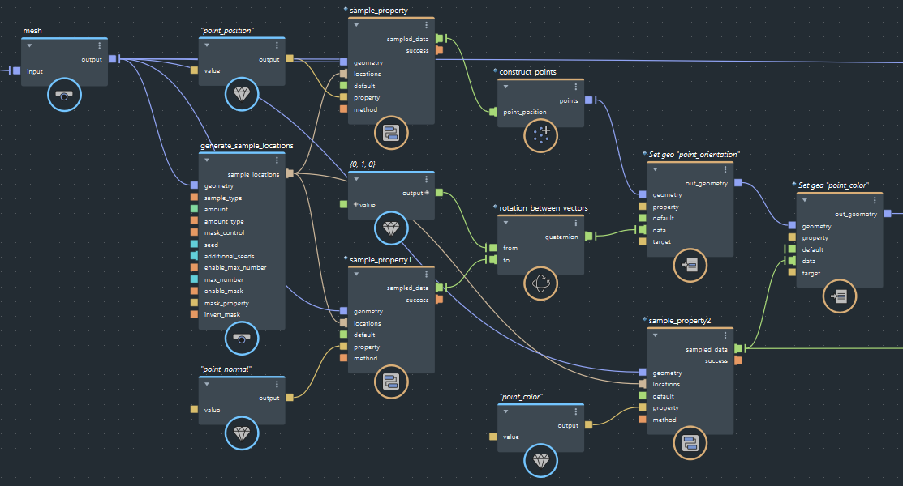

使用 generate_sample_locations 节点在几何体上创建均匀随机的位置分布。这对于许多情况非常有用，例如散射实例或创建自定义粒子发射。可以在网格曲面上或沿股生成随机位置。

在上面的示例中，粒子是在网格上的随机位置创建的。它们与法线对齐，并根据这些位置的值进行着色。
要生成随机位置，然后对特性进行采样，请执行以下操作：
将 generate_sample_locations 节点添加到图表中。
将要在其上生成位置的对象连接到 geometry 输入。
指定 sample_type：
surface 会在网格曲面上或沿股分段生成位置。point 会在网格、股或点对象的各点处生成位置。volume 不受支持。指定要生成的位置数：
amount 的值。当 amount_type 为 density 或作为模拟中每帧的平均值时，非整数值非常有用。amount_type 以指定如何解释 amount 的值：每单位面积或长度的 number 或 density。enable_max_number 和 max_number 以避免生成大量的位置，例如，具有高密度和大型对象的位置。请注意，这是对每次执行节点时生成的数量的限制（通常是模拟中的每个帧），而不是对场景持续时间内总数量的限制。更改 seed 或 additional_seeds 以生成不同的随机图案。
如果需要，使用遮罩控件调整在几何体不同区域中生成的位置数。这需要存储在几何体的点组件上的现有特性。特性值介于 0 和 1 之间，用于确定某个位置在某个区域中的相对概率。类型为 float 和 double 的遮罩值直接控制概率。向量视为颜色：RGB 值的解算方式为 average(R, G, B)，RGBA 值的解算方式为 A × average(R, G, B)。
enable_mask。mask_property 设置为要用作遮罩的特性的名称。mask_control 指定遮罩如何影响所生成的位置数：exact_rate 生成由 amount 指定但仅限于未遮罩区域的值，而 mask_by_property 会根据遮罩区域成比例地减少数量。invert_mask，会在遮罩特性为 0 或更小值的区域中生成全部数量的位置，但不会在特性为 1 或更大值的区域中生成位置。使用 generate_sample_locations 节点的 sample_locations 输出对几何体上的特性值进行采样：
sample_locations 连接到一个或多个 sample_property 节点，以立即对特性进行采样（请参见对位置的几何特性进行采样）。在这些情况下，您通常在连接到 generate_sample_locations 节点的同一几何体上进行采样。